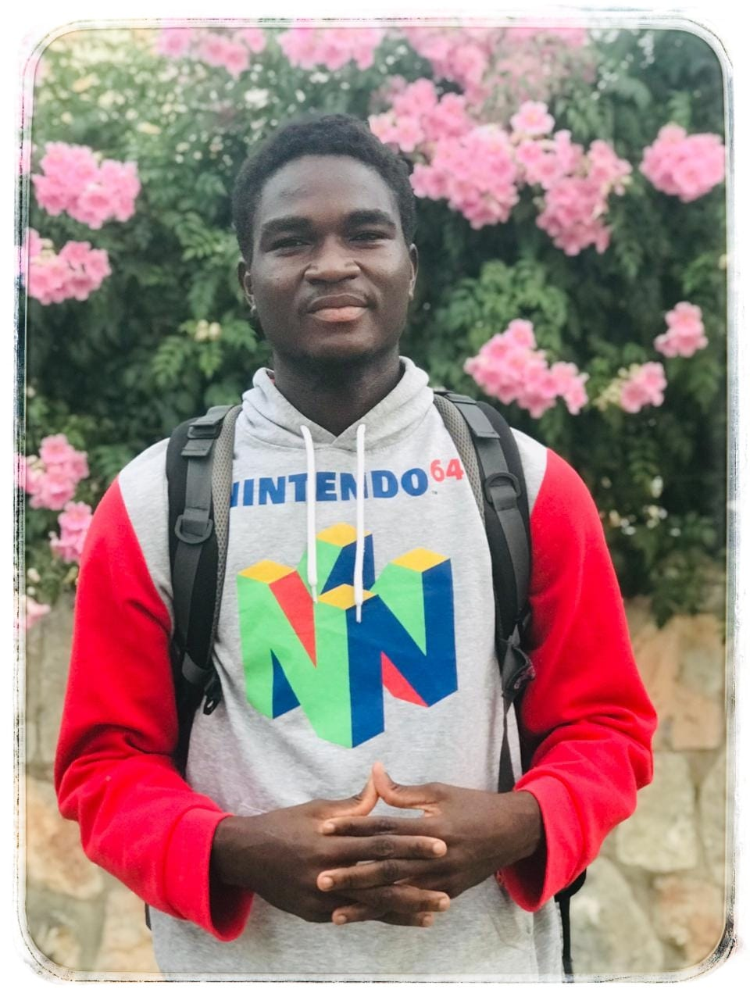

Charles Alfred Koenig
Hello! My name is Charles Alfred Koenig, a 24 year-old Liberian living in Northern Cyprus, and a student currenly enrolled in BYU-I online.
I recently completed PathwayConnect and I am now enrolled in the online degree at BYU-I pursuing a degree in software development.
I am also a graduate of NIIT BlueCrest Liberia with a professional certificate in software developement. As an aspiring software and web
developer, I
am eager to learn and leverage my knowledge of web development technologies and programming languages to create dynamic
and user-friendly websites.
With a strong foundation in HTML, CSS, JavaScript and experience in font-end framework like Twitter Bootstrap, I
am excited to take this WDD130 course, learn
new technologies, collaboarte with my fellow students and contribute to innovative projects while
continuously improving my skills. I am looking forward to a
collaborative, productive, and rewarding learning experience throughout this course.